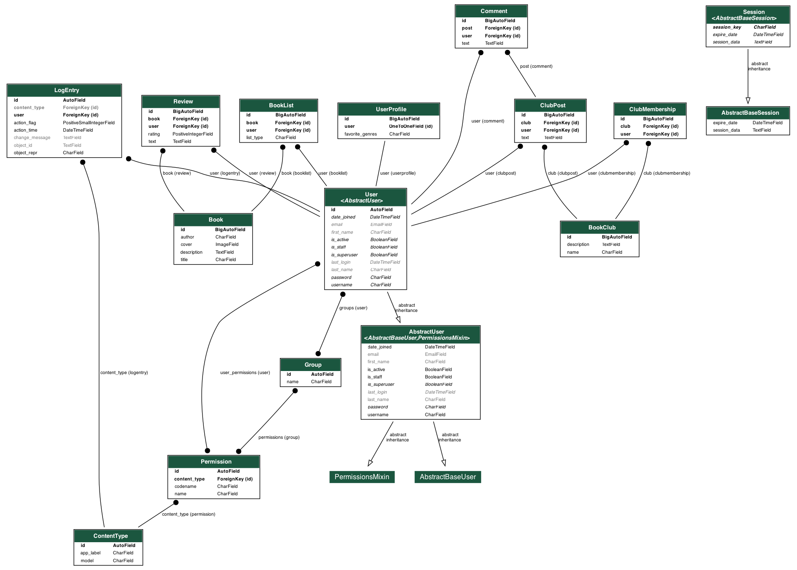

Реализация серверной чсти приложения средствами Django И Django REST Framework
Rad
– платформа, где любители чтения могут обмениваться рекомендациями, обсуждать книги, создавать списки прочитанных и планируемых книг, а также находить людей с похожими литературными интересами.
Каталог книг:
- Пользователи могут добавлять книги в общий каталог, включая информацию о названии, авторе, обложке и кратком описании.
- Поиск и фильтрация книг по различным критериям.
Профили пользователей:
- Пользователи создают свои профили, где могут указывать свои любимые жанры, авторов и т.д.
- Возможность добавлять друзей и следить за их активностью.
Обзоры и рейтинги:
- Возможность оставлять обзоры и ставить рейтинги книгам.
- Топ-листы книг по различным категориям.
Книжные клубы:
- Создание виртуальных клубов для обсуждения книг определенного жанра, автора или темы.
- Посты, комментарии и обсуждения внутри клубов.
Персональные списки:
- Создание списков "Прочитано", "Хочу прочитать", "Читаю сейчас" и т.д.
Схема базы данных

Book (Книга):
- title: Название книги (CharField).
- author: Автор книги (CharField).
- cover: Изображение обложки книги (ImageField).
- description: Описание книги (TextField).
UserProfile (Профиль пользователя):
- user: Связь с моделью пользователя Django (OneToOneField).
- favorite_genres: Любимые жанры пользователя (CharField).
Review (Обзор):
- user: Связь с моделью пользователя Django (ForeignKey).
- book: Связь с моделью книги (ForeignKey).
- rating: Рейтинг обзора (PositiveIntegerField).
- text: Текст обзора (TextField).
BookList (Список книг):
- user: Связь с моделью пользователя Django (ForeignKey).
- book: Связь с моделью книги (ForeignKey).
- list_type: Тип списка (CharField), например, "Прочитано", "Хочу прочитать", "Читаю сейчас" и т.д.
BookClub (Книжный клуб):
- name: Название книжного клуба (CharField).
- description: Описание книжного клуба (TextField).
ClubMembership (Членство в клубе):
- user: Связь с моделью пользователя Django (ForeignKey).
- club: Связь с моделью книжного клуба (ForeignKey).
ClubPost (Пост в клубе):
- user: Связь с моделью пользователя Django (ForeignKey).
- club: Связь с моделью книжного клуба (ForeignKey).
- text: Текст поста в клубе (TextField).
Comment (Комментарий):
- user: Связь с моделью пользователя Django (ForeignKey).
- post: Связь с моделью поста в клубе (ForeignKey).
- text: Текст комментария (TextField).
from django.db import models
from django.contrib.auth.models import User
class Book(models.Model):
title = models.CharField(max_length=255)
author = models.CharField(max_length=255)
cover = models.ImageField(upload_to='book_covers/')
description = models.TextField()
class UserProfile(models.Model):
user = models.OneToOneField(User, on_delete=models.CASCADE)
favorite_genres = models.CharField(max_length=255)
class Review(models.Model):
user = models.ForeignKey(User, on_delete=models.CASCADE)
book = models.ForeignKey(Book, on_delete=models.CASCADE)
rating = models.PositiveIntegerField()
text = models.TextField()
class BookList(models.Model):
user = models.ForeignKey(User, on_delete=models.CASCADE)
book = models.ForeignKey(Book, on_delete=models.CASCADE)
list_type = models.CharField(max_length=255) # Прочитано, Хочу прочитать, Читаю сейчас и т.д.
class BookClub(models.Model):
name = models.CharField(max_length=255)
description = models.TextField()
class ClubMembership(models.Model):
user = models.ForeignKey(User, on_delete=models.CASCADE)
club = models.ForeignKey(BookClub, on_delete=models.CASCADE)
class ClubPost(models.Model):
user = models.ForeignKey(User, on_delete=models.CASCADE)
club = models.ForeignKey(BookClub, on_delete=models.CASCADE)
text = models.TextField()
class Comment(models.Model):
user = models.ForeignKey(User, on_delete=models.CASCADE)
post = models.ForeignKey(ClubPost, on_delete=models.CASCADE)
text = models.TextField()
serializers
from rest_framework import serializers
from .models import Book, UserProfile, Review, BookList, BookClub, ClubMembership, ClubPost, Comment
class BookSerializer(serializers.ModelSerializer):
class Meta:
model = Book
fields = '__all__'
class UserProfileSerializer(serializers.ModelSerializer):
class Meta:
model = UserProfile
fields = '__all__'
class ReviewSerializer(serializers.ModelSerializer):
class Meta:
model = Review
fields = '__all__'
class BookListSerializer(serializers.ModelSerializer):
class Meta:
model = BookList
fields = '__all__'
class BookClubSerializer(serializers.ModelSerializer):
class Meta:
model = BookClub
fields = '__all__'
class ClubMembershipSerializer(serializers.ModelSerializer):
class Meta:
model = ClubMembership
fields = '__all__'
class ClubPostSerializer(serializers.ModelSerializer):
class Meta:
model = ClubPost
fields = '__all__'
class CommentSerializer(serializers.ModelSerializer):
class Meta:
model = Comment
fields = '__all__'
views
from rest_framework import viewsets
from .models import Book, UserProfile, Review, BookList, BookClub, ClubMembership, ClubPost, Comment
from .serializers import BookSerializer, UserProfileSerializer, ReviewSerializer, BookListSerializer, \
BookClubSerializer, ClubMembershipSerializer, ClubPostSerializer, CommentSerializer
class BookViewSet(viewsets.ModelViewSet):
queryset = Book.objects.all()
serializer_class = BookSerializer
class UserProfileViewSet(viewsets.ModelViewSet):
queryset = UserProfile.objects.all()
serializer_class = UserProfileSerializer
class ReviewViewSet(viewsets.ModelViewSet):
queryset = Review.objects.all()
serializer_class = ReviewSerializer
class BookListViewSet(viewsets.ModelViewSet):
queryset = BookList.objects.all()
serializer_class = BookListSerializer
class BookClubViewSet(viewsets.ModelViewSet):
queryset = BookClub.objects.all()
serializer_class = BookClubSerializer
class ClubMembershipViewSet(viewsets.ModelViewSet):
queryset = ClubMembership.objects.all()
serializer_class = ClubMembershipSerializer
class ClubPostViewSet(viewsets.ModelViewSet):
queryset = ClubPost.objects.all()
serializer_class = ClubPostSerializer
class CommentViewSet(viewsets.ModelViewSet):
queryset = Comment.objects.all()
serializer_class = CommentSerializer
urls
from django.urls import path, include
from django.contrib import admin
from rest_framework.routers import DefaultRouter
from Rad_app.views import BookViewSet, UserProfileViewSet, ReviewViewSet, BookListViewSet, \
BookClubViewSet, ClubMembershipViewSet, ClubPostViewSet, CommentViewSet
router = DefaultRouter()
router.register(r'books', BookViewSet)
router.register(r'userprofiles', UserProfileViewSet)
router.register(r'reviews', ReviewViewSet)
router.register(r'booklists', BookListViewSet)
router.register(r'bookclubs', BookClubViewSet)
router.register(r'clubmemberships', ClubMembershipViewSet)
router.register(r'clubposts', ClubPostViewSet)
router.register(r'comments', CommentViewSet)
urlpatterns = [
path("admin/", admin.site.urls),
]